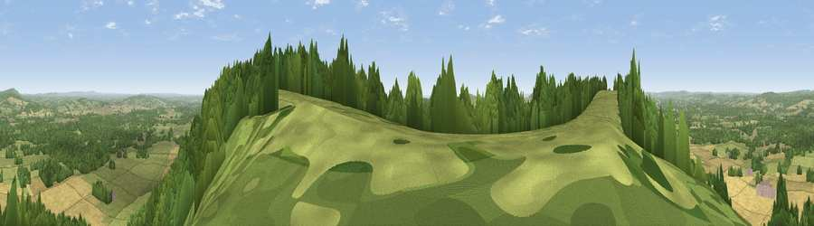

Viewpoint near Heyshott
#5708 in England · top 12% of its area beats it · near Heyshott · path 160 mWhere it is
The exact computed spot (SU 91075 16525). Click the marker for map links.
Public access: the nearest public right of way is about 160 m away — the final stretch may cross private land. Computed from Natural England's CRoW access layer and OpenStreetMap rights of way — not the legal definitive map. Always verify locally.
The view, rendered

A 360° render of this exact spot computed from the terrain model, tree cover and land cover — summer colours, afternoon light, calibrated against photographs of famous viewpoints. Real trees, hedges and buildings will differ in detail.
The panorama
Grey silhouette: terrain skyline in each direction (720 bearings, Earth curvature and refraction included). Dashed green: skyline with trees (+15 m) and buildings (+8 m) as obstacles. Blue strip: how far the ground is visible on each bearing.
Where the view opens
Wedge length = distance to the farthest visible ground on that bearing (vegetation-aware). Rings at 10, 25 and 50 km.
What fills the view
44% grassland · 36% woodland · 19% cropland ·
Angular shares of the visible panorama (visual magnitude), not map area. Landscape diversity 0.47 (0–1 Shannon).
Key numbers
More beautiful places nearby
The staircase of upgrades: each row has a higher view potential than everything closer. Driving times are estimates from straight-line distance, calibrated against real road routing — check an actual route before setting out.
| Place | Direction | Drive | Score |
|---|---|---|---|
| Viewpoint near Cocking | W · 2 km | ~6 min | 77.6 |
| Viewpoint near Cocking | W · 2 km | ~6 min | 78.3 |
| Viewpoint near Bignor | SE · 6 km | ~13 min | 82.1 |
| Linch Down | W · 6 km | ~13 min | 85.2 |
| Beacon Hill | W · 10 km | ~20 min | 85.8 |
| Chanctonbury Ring | ESE · 23 km | ~38 min | 87.0 |
| Viewpoint near St. Lawrence | SW · 54 km | ~75 min | 88.2 |
| Viewpoint near Niton | SW · 58 km | ~80 min | 89.2 |
50.94098, -0.70510 · source: screening · position refined by local search. Computed location — check access rights before visiting.